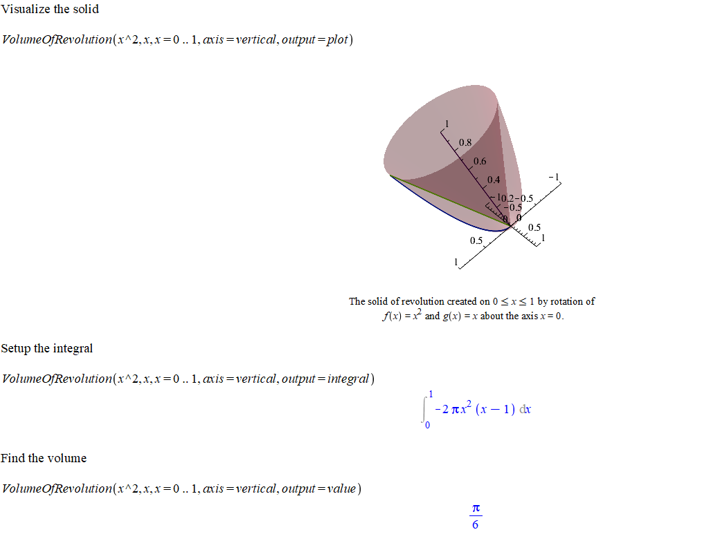

Topic 7 Applications of Integrals II
7.1 Volume of Revolution
In terms of definite integrals, the volume of a solid obtained by rotating a region about the \(x\)-axis can be calculated by \[\int_a^b \pi (r_1(x)^2 - r_2(x)^2) \mathrm{d} x \qquad \text{disk/washer method},\] or \[\int_a^b 2\pi r(y) h(y) \mathrm{d} y \qquad \text{shell method method},\]
where \(r_1(x)\), \(r_2(x)\) and \(r(x)\) represents the radius and \(h(x)\) represents the height of a cylindrical shell.
In practice, it’s better to recognize the shape of a cross section, find the volume of a slice of the solid and then set up the integral.
In the following, you will see some tools/commands from Maple which are very helpful to calculate the volume of a solid.
In Maple, the following command, supported by the package Student[Calculus1], can be used to get the graph, the integral and the volume of the solid obtained by rotation the region bounded by \(f(x)\), \(g(x)\), \(x=a\) and \(x=b\).
VolumeOfRevolution(f(x), g(x), x = a..b, opts)To learn what options does the command VolumeOfRevolution have, you may type
?VolumeOfRevolutionin the Math mode and hit enter. You will see the help page.

Solution.
#Load the package
with(Student[Calculus1])#Show the solid
VolumeOfRevolution(x^2, x, x = 0 .. 1, axis = vertical, output = plot)#Set up an integral
VolumeOfRevolution(x^2, x, x = 0 .. 1, axis = vertical, output = integral)#Find the volume
VolumeOfRevolution(x^2, x, x = 0 .. 1, axis = vertical, output = value)The outputs in Maple can be seen in the following picture
 Remark. 1. If you change the function to VolumeOfRevolutionTutor, you will see an interactive popup windows which does exactly the same thing.
If the rotation axis is not an axis of the coordinate system, you need add the option
distancefromaxis = numericinto the function. For example, if in the above example, the rotation is about \(y=-2\), then the Maple command should be the followingVolumeOfRevolution(x^2, x, x = 0 .. 1, axis = vertical, distancefromaxis = -2, output = integral)